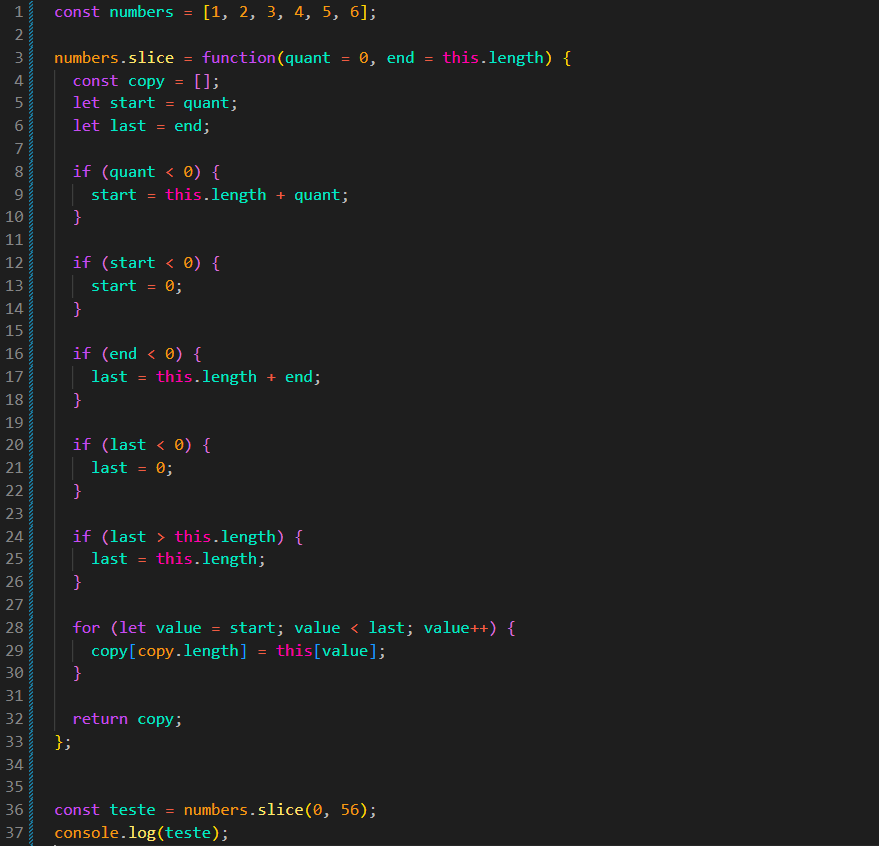

Implemente o método slice, que repete a
funcionalidade do método original. Use this dentro do
método para acessar o array.
O uso de métodos de array está proibido nesta tarefa. Use loops,
acesso por índice e o comprimento do array, se necessário.
Resultado
JS:

Explicacao do Resultado
Usamos 2 parâmetros.
quant = 0: define onde iremos iniciar. Caso não seja
informado, começaremos pelo índice 0.
end = this.length: define onde iremos finalizar. Caso não
seja informado, iremos até o final do array.
for (let value = start; value < last; value++):
let value = start: criamos a variável
value, que começa pelo valor de
start. Usamos start para podermos
modificar o valor inicial sem alterar diretamente o parâmetro
quant.
value < last: enquanto value for menor
do que nosso last (variável também criada para não
mexermos diretamente no parâmetro). last também irá
definir até onde irá nosso loop. Ou seja, ele é o
finalizador do loop.
copy[copy.length] = this[value];
copy[copy.length]: aqui acessamos a próxima posição do
nosso copy usando seu comprimento.
this[value]: acessamos o valor do array original na
posição indicada por value.
Dessa forma, pegamos cada valor do array original e colocamos no novo
array copy.